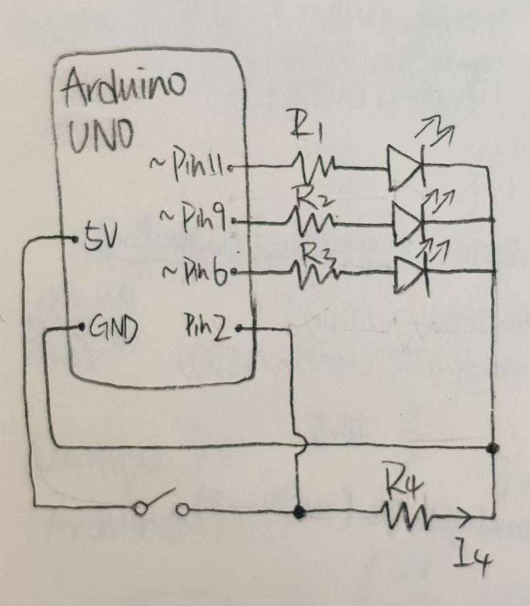
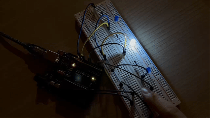
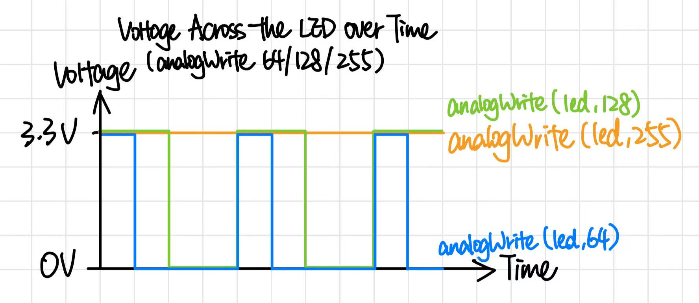

Circuit


For a 5V supply and a white/blue LED (V_LED ≈ 3.3V, I = 20mA),
R1 = R2 = R3 = V/I = (5V − 3.3V) / 0.02A = 85Ω.
So I used 100Ω resistors for each LED.
I used 10kΩ resistors for the button pull-down.
I4 = V/R4 = 5V / 10kΩ = 0.5mA
When the button is pressed, the current through the button is 0.5mA,
which is very small and safe for the Arduino pin.
// button pin number
const int buttonPin = 2;
// left blue LED pin number
const int led1 = 11;
// middle white LED pin number
const int led2 = 9;
// right blue LED pin number
const int led3 = 6;
// stores whether the light is currently in the blue state (0 = white, 1 = blue)
int done = 0;
// stores the current button reading (HIGH or LOW)
int buttonState = 0;
// runs once at startup
void setup() {
// set left blue LED pin as output
pinMode(led1, OUTPUT);
// set middle white LED pin as output
pinMode(led2, OUTPUT);
// set right blue LED pin as output
pinMode(led3, OUTPUT);
// set button pin as input
pinMode(buttonPin, INPUT);
// initial state: white on, blue off
// turn left blue LED off
digitalWrite(led1, LOW);
// turn middle white LED on
digitalWrite(led2, HIGH);
// turn right blue LED off
digitalWrite(led3, LOW);
}
// runs over and over forever
void loop() {
// read the current button state
buttonState = digitalRead(buttonPin);
// button pressed: fade white down, blue up
// only run this if button is pressed AND we are still in white state
if (buttonState == HIGH && done == 0) {
// loop from 0 to 255 in steps of 5 to fade the LEDs
for (int fadeValue = 0; fadeValue <= 255; fadeValue += 5) {
// increase left blue brightness
analogWrite(led1, fadeValue);
// decrease white brightness
analogWrite(led2, 255 - fadeValue);
// increase right blue brightness
analogWrite(led3, fadeValue);
// wait 10 ms so the fade is visible
delay(10);
}
// mark that we are now in blue state
done = 1;
}
// button released: fade blue down, white up
// only run this if button is released AND we are currently in blue state
if (buttonState == LOW && done == 1) {
// loop from 0 to 255 in steps of 5 to fade the LEDs
for (int fadeValue = 0; fadeValue <= 255; fadeValue += 5) {
// decrease left blue brightness
analogWrite(led1, 255 - fadeValue);
// increase white brightness
analogWrite(led2, fadeValue);
// decrease right blue brightness
analogWrite(led3, 255 - fadeValue);
// wait 10 ms so the fade is visible
delay(10);
}
// mark that we are now back in white state
done = 0;
}
}


The graph shows the PWM voltage across the LED (3.3V) for three analogWrite values.
I have 3 LEDs in my circuit, and each LED draws about 17mA with the 100Ω resistor. Thus,
Total current = 3 × 17mA = 51mA, so the total current draw is 51mA if all LEDs are on simultaneously.
This is below the Arduino current draw limits, where each pin can source up to 40mA, and the total current is limited to 150mA (course limit) / 200mA (chip absolute max). So it is safe.
If all my LEDs were on, and powered by a 1200mAh battery,
Time = 1200mAh / 51mA ≈ 23.5 hours.
So the circuit would run for about 23.5 hours.
I got 2.88V when I measured the voltage across one of my LEDs when it was on, which is slightly lower than the theoretical forward voltage of 3.3V. This may be because the actual current is slightly lower than 20mA, as I used 100Ω instead of the calculated 85Ω, and because of manufacturing tolerance. So the measured 2.88V is reasonable with a white/blue LED.
AI Usage: I used AI to help me when I ran into bugs in my code. When my circuit did not work as expected, I asked AI for suggestions. AI reminded me to double-check my wiring after I complained that my LEDs were not behaving as expected. It turned out that I had indeed made a wiring mistake. I really appreciate that AI reminded me to check my circuit carefully. Even though I was quite confident with my circuit, I still made a mistake. Later, I went back to the lecture slides to review the circuit and fixed the problem. I also used AI to help write some of the code comments. Overall, I think AI is a very helpful assistant for debugging and learning, but I still need to check and understand everything myself.